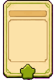

P3 Store
상점
목록
모바일
데스크톱
도감/결과
정원 1
2흐름
초지
나비
+27
정원 2
1흐름
습지
철새
+18
정원 3
0흐름
초지
비어 있음
+8
정원 4
3흐름
초지
꽃망울
+24
상점
런 보급과 메타 성장
X
런 코인
2
씨앗
6
이번 구매 효과
최고수 21 -> 27
손패 반짝 강화
6 나비 다음 최고수 강화
+21 -> +27
2
원형 카드 구매
1 새싹을 다음 최고수 21 유지로 추가
덱 +1
2
정원 비료
정원 1 다음 내기 +2
다음 점수 +7
1
빈터 정리
정리할 정원 없음
대기
1
긴 산책로
새 런의 내기 수 증가
0/2
6

손수레 확장
새 런 손패 1장 증가
0/1
12